Ripartizione delle azioni verticali nei gruppi di pali
Il gruppo non è una somma uniforme
Sforzo normale e momenti producono reazioni diverse sui pali in funzione delle coordinate rispetto al baricentro.
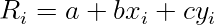
con equilibrio:
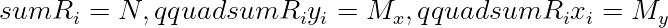
Forma matriciale.
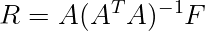
Esempio.
Con quattro pali simmetrici e solo (N=4000,mathrm{kN}):
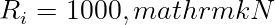
Introducendo momento, i pali sul lato compresso aumentano la reazione e quelli opposti possono andare in trazione.
Riferimenti tecnici utilizzati:
- D.M. 17 gennaio 2018, NTC 2018, Capitolo 6.
- Circolare C.S.LL.PP. 21 gennaio 2019, n. 7.
- UNI EN 1997-1, Eurocodice 7: Progettazione geotecnica.
Nota StruHub.
StruHub usa la forma matriciale perché funziona anche per layout irregolari.
Effetto del momento biassiale
Con momenti in due direzioni, la reazione massima non dipende solo dal palo più lontano lungo un asse. Dipende dalla combinazione delle coordinate
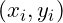
. In forma lineare: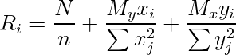
per layout simmetrici rispetto agli assi principali.
Trazione nei pali
Se $R_i<0$, il palo risulta in trazione. Questo non è un dettaglio numerico: cambia il tipo di verifica, perché entrano in gioco peso proprio, aderenza laterale, armature e connessione palo-plinto.
Una sintesi utile è:
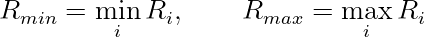
Nel tema di la ripartizione delle azioni nel gruppo di pali, il dato geotecnico non è un parametro accessorio. Stratigrafia, falda, tensioni efficaci e rigidezze del terreno determinano la domanda e la capacità tanto quanto la geometria dell'opera.
Tensioni efficaci e stratigrafia
La tensione efficace è la grandezza che rende leggibile la risposta del terreno:


Quando la falda cambia quota, non cambia solo un valore idraulico: cambiano resistenze, spinte, rigidezze e talvolta il meccanismo critico. Per questo ogni calcolo geotecnico deve mostrare come si costruisce (\sigma'_v(z)).
Domanda, capacità e margine. La forma finale della verifica dovrebbe essere un rapporto domanda-capacità :

ma il rapporto va accompagnato dalla scomposizione dei contributi
Nel caso di plinto su pali, il valore massimo o minimo non è sufficiente: servono diagrammi, stratigrafia e posizione del punto critico.
Esempio di stratigrafia
Si consideri uno strato superficiale di 3 m con (\gamma=18\,\mathrm{kN/m^3}), seguito da uno strato saturo con (\gamma_{sat}=20\,\mathrm{kN/m^3}). Con falda a 3 m, a 6 m di profondità :


Questo valore entra poi nelle formule di capacità , spinta o rigidezza. Se la falda fosse più alta, il risultato cambierebbe in modo diretto.
Lettura da progettista. Il gruppo di pali non lavora come un insieme uniforme. Il momento crea una gerarchia di reazioni, e i pali più lontani dagli assi baricentrici diventano critici. Un riferimento tecnico deve quindi dichiarare le ipotesi geotecniche con la stessa cura delle formule strutturali. Il terreno non è lo sfondo del modello: è parte del modello.
Costruzione del modello geotecnico. Nei problemi geotecnici la parte più importante non è la formula finale, ma la costruzione del profilo di calcolo. Stratigrafia, falda, parametri drenati o non drenati e rigidezze non possono essere trattati come valori intercambiabili. Ogni strato contribuisce in modo diverso alla domanda e alla capacità .
Un profilo minimo dovrebbe riportare quota superiore e inferiore, peso di volume, condizioni di falda, angolo di attrito, coesione o resistenza non drenata, modulo o coefficiente di reazione. Solo dopo questa tabella ha senso applicare formule di capacità , spinta o deformabilità .
Tensioni efficaci come filo conduttore. Molte grandezze geotecniche dipendono dalla tensione efficace. Per questo è utile costruire esplicitamente il diagramma:
e non limitarsi a un valore alla quota di interesse. Nel caso dei pali, la tensione efficace alla punta influenza (Q_b), mentre quella lungo il fusto influenza (Q_s). Nel caso delle opere di sostegno, la tensione efficace entra nella spinta del terreno.
Domanda, capacità e deformabilità . Un calcolo geotecnico completo dovrebbe distinguere tra capacità ultima e risposta in esercizio. Un palo può avere capacità assiale sufficiente ma spostamento laterale eccessivo; un gruppo di pali può rispettare la portanza media ma avere un palo in trazione; un plinto può essere verificato come rigido ma mostrare una distribuzione FEM più gravosa.
Il rapporto domanda-capacità è utile:
ma deve essere affiancato alla grandezza deformativa, ad esempio spostamento, rotazione o cedimento.
Esempio di sensitività . Se la falda passa da 5 m a 2 m dal piano campagna, la tensione efficace a 8 m può ridursi sensibilmente. Una riduzione di (\sigma'_v) del 20% in un terreno granulare può ridurre direttamente la quota di resistenza di punta calcolata con (N_q\sigma'_vA_b). Questo mostra perché la falda non è un dettaglio di input, ma una variabile meccanica.
Scrittura da riferimento tecnico. Un articolo geotecnico solido deve sempre mostrare il percorso: dati di terreno, tensioni efficaci, formula, risultato, margine. Se manca uno di questi passaggi, il lettore non può ricostruire il calcolo.
Gruppo di pali e ripartizione elastica. La ripartizione delle azioni verticali in un gruppo di pali dipende dalla rigidezza dei pali, dalla rigidezza del plinto e dall'eccentricita della risultante. Nel caso ideale di plinto rigido e pali con uguale rigidezza assiale, la forza nel palo puo essere stimata con una formula di ripartizione lineare:
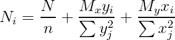
Questa relazione e uno strumento potente perche collega immediatamente geometria del gruppo e domanda nei singoli pali. I pali piu lontani dall'asse di rotazione prendono quote maggiori di carico; se il momento e elevato, alcuni pali possono arrivare a trazione o a scarico.
L'ipotesi di plinto rigido, pero, deve essere verificata. Se il plinto e deformabile, la distribuzione non e piu lineare e la rigidezza locale dei pali diventa piu importante. In quel caso un modello FEM a piastra o graticcio puo restituire una ripartizione piu realistica.
Efficienza di gruppo. La capacita del gruppo non e sempre la somma delle capacita dei singoli pali. L'interazione dei bulbi di tensione nel terreno puo ridurre l'efficienza. In forma sintetica:
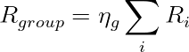
dove
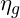
e un coefficiente di efficienza. Valori inferiori a 1 indicano interazione sfavorevole; in alcuni casi, soprattutto in terreni granulari e con tecnologie che addensano il terreno, il comportamento puo essere meno penalizzante. Il punto e che il gruppo va letto come sistema geotecnico, non come semplice lista di pali.Un esempio: quattro pali disposti a quadrato con interasse
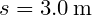
, carico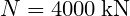
e momento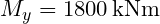
. Se le coordinate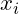
sono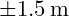
, allora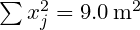
. L'incremento sui pali estremi e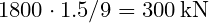
. Due pali portano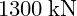
, due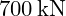
. Questa lettura immediata aiuta a capire se la geometria del gruppo e equilibrata. I riferimenti sono D.M. 17 gennaio 2018, Capitolo 6, Circolare C.S.LL.PP. 21 gennaio 2019 n. 7 e UNI EN 1997-1:2013.Controllo dimensionale. Un riferimento tecnico deve permettere al lettore di controllare gli ordini di grandezza. Ogni risultato numerico dovrebbe essere accompagnato da un controllo dimensionale, da una interpretazione fisica e da una indicazione del parametro dominante. Se una formula restituisce un valore in  ,
,  ,
,  o
o  , l'unita deve essere esplicita e coerente con le grandezze inserite.
, l'unita deve essere esplicita e coerente con le grandezze inserite.
La forma generale di una verifica puo essere letta come:

dove  e l'effetto dell'azione di progetto e
e l'effetto dell'azione di progetto e  la resistenza di progetto. Questa scrittura, comune a molti problemi strutturali e geotecnici, aiuta a separare domanda, capacita e margine.
la resistenza di progetto. Questa scrittura, comune a molti problemi strutturali e geotecnici, aiuta a separare domanda, capacita e margine.
Dal calcolo alla decisione. Il valore finale non basta. Bisogna chiedersi da quale ipotesi dipende, quanto e sensibile ai parametri e quale meccanismo fisico rappresenta. Un margine ottenuto con parametri poco tracciabili ha meno valore di un margine piu modesto ma ben documentato. Per questo, quando si cita una norma o un criterio di combinazione, il riferimento deve essere scritto in modo esplicito e verificabile.
Controllo dimensionale. Un riferimento tecnico deve permettere al lettore di controllare gli ordini di grandezza. Ogni risultato numerico dovrebbe essere accompagnato da un controllo dimensionale, da una interpretazione fisica e da una indicazione del parametro dominante. Se una formula restituisce un valore in , , o , l'unita deve essere esplicita e coerente con le grandezze inserite.
La forma generale di una verifica puo essere letta come:
dove e l'effetto dell'azione di progetto e la resistenza di progetto. Questa scrittura, comune a molti problemi strutturali e geotecnici, aiuta a separare domanda, capacita e margine.
Dal calcolo alla decisione. Il valore finale non basta. Bisogna chiedersi da quale ipotesi dipende, quanto e sensibile ai parametri e quale meccanismo fisico rappresenta. Un margine ottenuto con parametri poco tracciabili ha meno valore di un margine piu modesto ma ben documentato. Per questo, quando si cita una norma o un criterio di combinazione, il riferimento deve essere scritto in modo esplicito e verificabile.
Controllo dimensionale. Un riferimento tecnico deve permettere al lettore di controllare gli ordini di grandezza. Ogni risultato numerico dovrebbe essere accompagnato da un controllo dimensionale, da una interpretazione fisica e da una indicazione del parametro dominante. Se una formula restituisce un valore in , , o , l'unita deve essere esplicita e coerente con le grandezze inserite.
La forma generale di una verifica puo essere letta come:
dove e l'effetto dell'azione di progetto e la resistenza di progetto. Questa scrittura, comune a molti problemi strutturali e geotecnici, aiuta a separare domanda, capacita e margine.
Dal calcolo alla decisione. Il valore finale non basta. Bisogna chiedersi da quale ipotesi dipende, quanto e sensibile ai parametri e quale meccanismo fisico rappresenta. Un margine ottenuto con parametri poco tracciabili ha meno valore di un margine piu modesto ma ben documentato. Per questo, quando si cita una norma o un criterio di combinazione, il riferimento deve essere scritto in modo esplicito e verificabile.
Controllo dimensionale. Un riferimento tecnico deve permettere al lettore di controllare gli ordini di grandezza. Ogni risultato numerico dovrebbe essere accompagnato da un controllo dimensionale, da una interpretazione fisica e da una indicazione del parametro dominante. Se una formula restituisce un valore in , , o , l'unita deve essere esplicita e coerente con le grandezze inserite.
La forma generale di una verifica puo essere letta come:
dove e l'effetto dell'azione di progetto e la resistenza di progetto. Questa scrittura, comune a molti problemi strutturali e geotecnici, aiuta a separare domanda, capacita e margine.
Dal calcolo alla decisione. Il valore finale non basta. Bisogna chiedersi da quale ipotesi dipende, quanto e sensibile ai parametri e quale meccanismo fisico rappresenta. Un margine ottenuto con parametri poco tracciabili ha meno valore di un margine piu modesto ma ben documentato. Per questo, quando si cita una norma o un criterio di combinazione, il riferimento deve essere scritto in modo esplicito e verificabile.
Controllo dimensionale. Un riferimento tecnico deve permettere al lettore di controllare gli ordini di grandezza. Ogni risultato numerico dovrebbe essere accompagnato da un controllo dimensionale, da una interpretazione fisica e da una indicazione del parametro dominante. Se una formula restituisce un valore in , , o , l'unita deve essere esplicita e coerente con le grandezze inserite.
La forma generale di una verifica puo essere letta come:
dove e l'effetto dell'azione di progetto e la resistenza di progetto. Questa scrittura, comune a molti problemi strutturali e geotecnici, aiuta a separare domanda, capacita e margine.
Dal calcolo alla decisione. Il valore finale non basta. Bisogna chiedersi da quale ipotesi dipende, quanto e sensibile ai parametri e quale meccanismo fisico rappresenta. Un margine ottenuto con parametri poco tracciabili ha meno valore di un margine piu modesto ma ben documentato. Per questo, quando si cita una norma o un criterio di combinazione, il riferimento deve essere scritto in modo esplicito e verificabile.
Riferimenti normativi e bibliografici utilizzati:
- D.M. 17 gennaio 2018, "Aggiornamento delle Norme tecniche per le costruzioni", Ministero delle Infrastrutture e dei Trasporti, Supplemento ordinario alla Gazzetta Ufficiale n. 42 del 20 febbraio 2018.
- Circolare C.S.LL.PP. 21 gennaio 2019, n. 7, "Istruzioni per l'applicazione dell'Aggiornamento delle Norme tecniche per le costruzioni di cui al decreto ministeriale 17 gennaio 2018".
- UNI EN 1990:2006, Eurocodice - Criteri generali di progettazione strutturale.
- UNI EN 1991-2:2005, Eurocodice 1 - Azioni sulle strutture - Parte 2: Carichi da traffico sui ponti.
- UNI EN 1992-1-1:2015, Eurocodice 2 - Progettazione delle strutture di calcestruzzo.
- UNI EN 1993-1-1:2014, Eurocodice 3 - Progettazione delle strutture di acciaio.
- UNI EN 1994-2:2006, Eurocodice 4 - Progettazione delle strutture composte acciaio-calcestruzzo - Ponti.
- UNI EN 1997-1:2013, Eurocodice 7 - Progettazione geotecnica - Parte 1: Regole generali.
- UNI EN 1998-2:2011, Eurocodice 8 - Progettazione delle strutture per la resistenza sismica - Ponti.